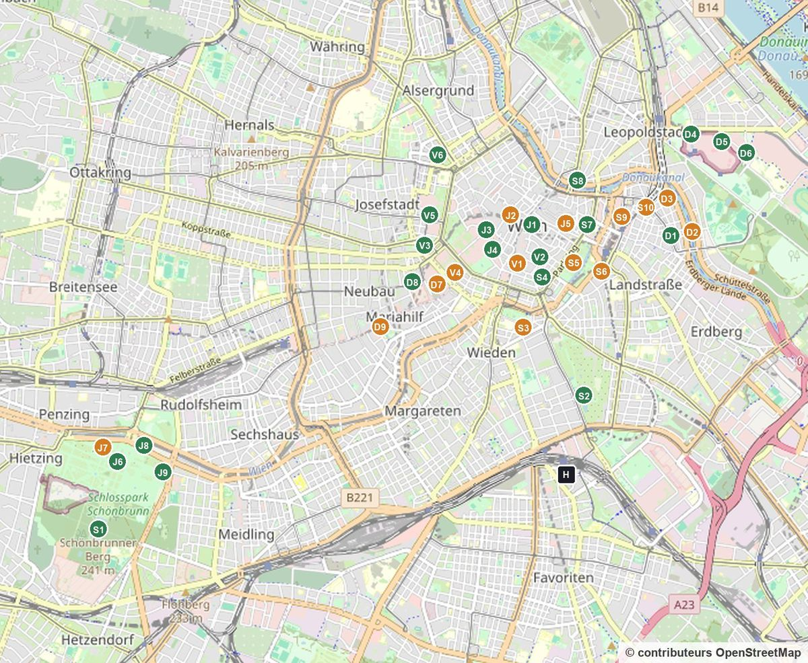
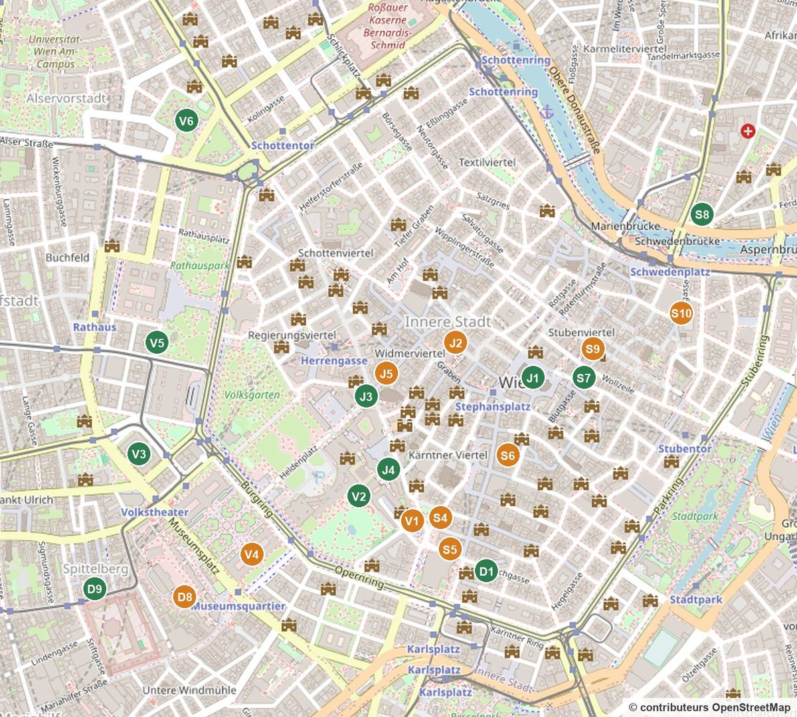

Chaque repère porte la lettre du jour (J jeudi, V vendredi, S samedi, D dimanche) et son numéro dans la journée ; la couleur dit l'intérêt. Touchez un repère pour ouvrir sa carte dans la journée. H : l'hôtel.
Toute la ville
De Schönbrunn à l'ouest jusqu'au Prater à l'est.

Le centre en grand
Le premier arrondissement et le Ring, où se trouvent la plupart des lieux. Quand deux lieux se touchent, l'un est un peu décalé à droite.

Jeudi 12 · Le centre et la Hofburg le matin, le château l'après-midi
Le symbole de Vienne et son toit de tuiles vernissées. Le fond de la nef est gratuit. Autour, le marché de Noël de Stephansplatz, ouvert depuis le 6/11. On montera la tour samedi, par ciel clair.
À savoir Le symbole de Vienne, au centre exact de la vieille ville. Son toit est couvert de tuiles vernissées dessinant l'aigle impérial ; la tour sud culmine à 136 m. La cathédrale, incendiée en 1945, a été reconstruite grâce aux dons de toute l'Autriche.
La rue chic et ses lustres de Noël, puis Saint-Pierre, petite église baroque toute dorée, entrée libre.
À savoir Le Graben, ancien fossé romain, est devenu la rue la plus élégante de Vienne ; en son centre, la colonne de la Peste remercie le ciel de la fin de l'épidémie de 1679. Juste à côté, la Peterskirche, baroque, cache une coupole peinte par Rottmayr.
On traverse le palais impérial à pied sous la coupole Saint-Michel jusqu'à la Josefsplatz. L'École d'équitation est là : on passe sans s'arrêter.
À savoir Le palais d'hiver des Habsbourg, agrandi pendant plus de six siècles : 18 ailes et 19 cours. Il abrite aujourd'hui la présidence de la République, la Bibliothèque nationale et l'École d'équitation. Les cours et passages se traversent librement.
La Prunksaal : des livres anciens sur deux étages sous une coupole peinte. La grande bibliothèque baroque du séjour, à 3 min de la Michaelerplatz.
À savoir La Prunksaal, voulue par l'empereur Charles VI et dessinée par Fischer von Erlach, achevée vers 1726. Environ 200 000 livres anciens sur deux niveaux, sous une coupole peinte par Daniel Gran. Souvent citée parmi les plus belles bibliothèques du monde.
tous les jours 10 h-19 h, Kaiserschmarrn 10 h-19 hnon relevé
Déjeuner où vous voulez dans le quartier. Si l'envie : Demel, pâtissier de la cour depuis 1786, sur le Kohlmarkt à 3 min de la Bibliothèque (Kaiserschmarrn toute la journée). Ce n'est pas un passage obligé : repartir vers 13 h 15 pour le château.
À savoir Demel est le pâtissier de la cour impériale depuis 1786. Dans le salon du fond, une vitre laisse voir les pâtissiers au travail. La spécialité maison est l'Annatorte. Une option parmi d'autres pour déjeuner : le Kohlmarkt et le Graben regorgent de cafés.
8 h 30-17 h, entrée à l'heure inscrite sur le billet42 € (château seul) · Winter Pass 73 € seulement si vous voulez aussi zoo et serre
Les appartements de Sissi et de François-Joseph et les salons de Marie-Thérèse, tout l'étage noble (75 min). La grande salle des cérémonies est en restauration.
À savoir Ancienne résidence d'été des Habsbourg, inscrite au patrimoine mondial de l'Unesco avec son parc. Le château compte 1 441 pièces, dont une quarantaine se visitent. Marie-Thérèse en a fait le cœur de sa cour ; Mozart, enfant, y a joué devant elle. François-Joseph y est né et y est mort.
9 h-17 h, entrée jusqu'à 16 h 4512 € en ligne (14 € sur place), créneau obligatoire
Juste à côté du château : les carrosses impériaux et le « chemin de Sissi », avec ses robes et sa selle. Le Sisi Museum de la Hofburg étant fermé jusqu'au 18/11, c'est ici que vous verrez Sissi.
À savoir Le musée garde les voitures de la cour de Vienne : la grande voiture du couronnement tirée par huit chevaux, les traîneaux, les voitures d'enfants. Le parcours Sissi suit l'impératrice de son arrivée comme fiancée à ses funérailles, avec ses robes et sa selle.
À la tombée de la nuit, la façade du château illuminée derrière les chalets : vin chaud et dîner sur les stands avant Imperial Lights.
À savoir Environ 90 chalets et un sapin immense dans la cour d'honneur, avec la façade jaune du château illuminée derrière. Les articles d'hiver conseillent d'y être juste après la tombée de la nuit, vers 16 h 30.
16 h 30-22 h, notre entrée à 19 h52 € pour deux, payé
Le parcours lumineux dans le parc, déjà payé. Être à l'entrée Meidlinger Tor à 18 h 50, l'appli Fever ouverte.
À savoir Un parcours lumineux nocturne dans le parc de Schönbrunn, avec projections et installations. Billets à heure fixe dans l'appli Fever ; entrée par le Meidlinger Tor.
U4 direction HeiligenstadtMonter à Schönbrunn · 6 arrêtsDescendre à Karlsplatz
U1
U1 direction OberlaaMonter à Karlsplatz · 2 arrêtsDescendre à Hauptbahnhof
Le centre et la Hofburg le matin, le château l'après-midi
Un seul trajet vers Schönbrunn. Le matin, tout le centre à pied : cathédrale, Graben, Hofburg et Bibliothèque nationale, puis déjeuner dans le quartier (Demel en option). L'après-midi, l'intérieur du château (le gris n'y change rien), les carrosses en option, puis le marché et Imperial Lights. Jardins et Gloriette : samedi au soleil.
Bruegel, Vermeer, Arcimboldo, et le café sous la coupole. Au sec pendant la fin de la pluie et le vent du matin.
À savoir Ouvert en 1891 pour abriter les collections des Habsbourg, face à son jumeau, le musée d'histoire naturelle. Il possède la plus grande collection de Bruegel au monde, et Klimt a peint une partie du décor du grand escalier. Le café sous la coupole est l'un des plus beaux de Vienne.
lun-ven 9 h 30-15 h 30, dernière entrée 14 h 30, 25 personnes par heuregratuit
Le grand hall et son escalier sous verrière, qu'on croirait sorti d'un film. Ce n'est pas un lieu de tournage de Harry Potter, mais la photo vaut le détour.
À savoir Siège de la Cour suprême, construit à la fin du XIXe siècle. Le grand hall à escalier, sous une verrière, est dominé par une statue de la Justice. Le palais a brûlé lors des émeutes de juillet 1927, puis a été restauré.
lun-ven 8 h-16 h, plats chauds 11 h-14 h 30prix de cantine (environ 11 € selon un blog lu le 11/11, non revérifié)
Le bon plan pour bien manger sans se ruiner : la cantine en libre-service du palais de justice, ouverte à tous, au 5e étage, avec vue sur tout Vienne. Plats viennois (schnitzel, Grammelknödel), pas de fast-food.
À savoir Le café a été construit sur le toit du palais de justice lors de sa rénovation. Il sert de cantine aux employés de la justice, mais il est ouvert à tous ; la Cour suprême souligne sa vue tout autour de Vienne.
À pied vers la Karlskirche en traversant les jardins de la Hofburg, quand le ciel s'éclaircit. Au Burggarten, pause café possible au Palmenhaus si l'envie (plus cher).
À savoir Le Volksgarten et sa roseraie, puis l'immense Heldenplatz, la « place des Héros » devant la Hofburg, et le Burggarten, l'ancien jardin privé de l'empereur, avec la serre Art nouveau du Palmenhaus.
lun-sam 9 h-18 h · messe à 18 h9,50 € (ascenseur, terrasse, trésor et tribune de l'orgue compris)
La visite vaut le coup : un ascenseur panoramique monte à l'intérieur de la coupole, au plus près des fresques de Rottmayr, puis une terrasse donne sur la ville. Devant, le marché d'artisans Art Advent ouvre aujourd'hui.
À savoir La Karlskirche fut promise par Charles VI pendant la peste de 1713 et achevée en 1739 par Fischer von Erlach ; ses deux colonnes de 47 m racontent la vie de saint Charles Borromée. Un ascenseur panoramique monte dans la coupole, au contact des 1 250 m² de fresques de Rottmayr.
musée ven 9 h-18 h · marché : artisans 12 h-20 h, restauration 11 h-21 hmusée gratuit
Juste à côté et gratuit : l'histoire de Vienne, la maquette de la cathédrale, le portrait d'Emilie Flöge par Klimt, et une terrasse avec vue au coucher du soleil. Puis le marché d'artisans devant la Karlskirche.
À savoir Le musée de la ville, rouvert le 6 décembre 2023, raconte Vienne de la préhistoire à aujourd'hui, gratuitement. Devant la Karlskirche, le marché Art Advent réunit des artisans d'art pendant l'Avent.
À 5 min de la Karlskirche : le grand marché de Vienne, pour goûter quelques spécialités avant le parcours des lumières (ou y dîner pour moins cher). Puis 10 min à pied jusqu'à l'Opéra et la Kärntner Straße.
À savoir Le plus grand marché de Vienne, cité par 8 blogs sur 17 : épices, olives, fromages, cuisines du monde, petits restaurants. Les stands ferment le dimanche.
Départ du parcours de Noël proposé par l'office de tourisme. Sur la Kärntner Straße, environ 550 000 LED en chaînes de cristal ; dans l'Annagasse, la ruelle baroque juste à côté, les lumières dessinent les notes de « Douce nuit ».
À savoir Chaque année, plus de deux millions de LED illuminent une trentaine de rues commerçantes de Vienne, financées par les commerçants avec la Ville et la Chambre de commerce, sur de l'électricité verte. La Kärntner Straße relie l'Opéra à la cathédrale ; l'Annagasse est une ruelle baroque aux maisons classées.
48 « étoiles de Sissi », inspirées des diamants qu'elle portait dans les cheveux, et, nouveauté 2026, des rennes lumineux. C'est ici que la ville a allumé les illuminations hier soir.
À savoir Les 48 étoiles du Neuer Markt reprennent le motif des étoiles de diamant que l'impératrice Élisabeth portait dans les cheveux ; une gravure éclairée de l'intérieur les fait scintiller. Les rennes lumineux sont la nouveauté 2026.
La cathédrale éclairée au-dessus du marché de Noël, puis les énormes boules rouges de la Rotenturmstraße, à descendre quelques minutes vers le canal avant de revenir.
À savoir La Rotenturmstraße relie la cathédrale au Schwedenplatz et au canal du Danube ; ses grosses boules rouges font partie du Noël viennois depuis des années. La rue est devenue une zone de rencontre où piétons et voitures partagent l'espace.
Les grands lustres de cristal du Graben, les couronnes de la Habsburgergasse et les étoiles-miroirs de la Spiegelgasse dans les rues voisines, puis les rideaux de lumière du Kohlmarkt jusqu'à la coupole de la Hofburg.
À savoir Le Graben porte des lustres de cristal géants, environ 250 000 LED. Au Kohlmarkt, plus de 130 000 LED forment un plafond de lumière continu. Dans les rues voisines : couronnes impériales dans la Habsburgergasse, 25 étoiles-miroirs dans la Spiegelgasse.
ven 10 h-21 h, stands de restauration jusqu'à 22 h
Par la Herrengasse et les ruelles illuminées du quartier des palais (Bognergasse, Tuchlauben) : le marché Am Hof, ouvert depuis aujourd'hui, plus petit et plus calme, pour un vin chaud ou un dîner.
À savoir Le marché Am Hof est réputé pour l'artisanat fait main. Le quartier des palais voisin (Freyung, Bognergasse, Tuchlauben) a lui aussi ses illuminations.
Fin du parcours : le grand marché devant l'hôtel de ville illuminé et, dans le parc, le célèbre arbre aux cœurs. Dîner sur les stands. De là, 5 min jusqu'à la Votivkirche pour voir gratuitement, de dehors, le signe de l'infini entre les tours.
À savoir Le plus grand marché de Noël de Vienne, devant l'hôtel de ville néogothique (1872-1883). Dans le parc, l'arbre aux cœurs illuminé est un classique du Noël viennois, surtout pour les amoureux.
Tram D direction AbsberggasseMonter à SchottentorDescendre à Hauptbahnhof
À pied2 min à pied jusqu'à l'hôtel
Musée et Karlskirche le jour, parcours des lumières de Noël le soir
Le matin à l'intérieur (musée, palais de justice), déjeuner sur le toit du palais de justice, la Karlskirche et le Wien Museum l'après-midi, puis à la nuit le parcours des illuminations de Noël, allumées hier : Kärntner Straße, Annagasse, Neuer Markt, Stephansplatz, Rotenturmstraße, Graben, Kohlmarkt, Am Hof, Rathausplatz. Gratuit.
parc 6 h 30-17 h 30 · terrasse de la Gloriette fermée depuis le 2/11gratuit
Le souhait de Laura : les jardins, la fontaine de Neptune et la montée à la Gloriette sous le ciel bleu du matin, avant la foule. Le parc ouvre à 6 h 30 et le soleil se lève à 6 h 59.
À savoir Le jardin baroque descend du château jusqu'à la fontaine de Neptune, puis monte vers la Gloriette, arcade de 1775 qui domine la ville. Le parc, ouvert à tous gratuitement, est inscrit au patrimoine mondial avec le château.
À savoir Le Baiser (1908-1909), feuille d'or et huile, est le tableau le plus célèbre d'Autriche. Le Belvédère conserve aussi la plus importante réunion de Klimt, des Schiele et des Kokoschka.
Le palais se reflète dans le bassin : la photo à faire par ciel bleu.
À savoir Deux palais baroques construits pour le prince Eugène de Savoie au début du XVIIIe siècle, reliés par un jardin à la française en terrasses. Le Belvédère supérieur se reflète dans son grand bassin.
Sur le chemin entre le Belvédère et le centre : le parc de la ville et la statue dorée de Johann Strauss, le roi de la valse, l'une des photos les plus connues de Vienne (cité par l'infographie Tripist).
À savoir Le Stadtpark, premier parc aménagé par la Ville, ouvert en 1862, longe le Ring. On y voit le monument doré de Johann Strauss fils, compositeur du « Beau Danube bleu », jouant du violon sous une arche de marbre.
Le kiosque à saucisses le plus connu de Vienne, pour un déjeuner rapide. Juste au-dessus, la terrasse de l'Albertina, gratuite, regarde l'Opéra.
À savoir Le kiosque à saucisses le plus connu de Vienne, au pied de la terrasse de l'Albertina. À commander : une Käsekrainer, saucisse fourrée au fromage. La terrasse de l'Albertina, juste au-dessus, est gratuite et donne sur l'Opéra.
La Sachertorte chez Sacher, ou le café aux nounours de Laura, HIIICH, à 100 m (Kärntner Straße 47, 9 h-22 h).
À savoir La Sachertorte, gâteau au chocolat et à l'abricot, a été créée en 1832 par Franz Sacher. Le café de l'hôtel Sacher la sert avec de la crème fouettée. HIIICH, à 100 m sur la Kärntner Straße, est le café aux nounours choisi par Laura.
Le toit du grand magasin Steffl, sur la Kärntner Straße, avec vue sur la cathédrale : une envie de Laura, sur le chemin de la tour.
À savoir Le Steffl est un grand magasin de la Kärntner Straße, la rue piétonne qui relie l'Opéra à la cathédrale. Au dernier étage, son café-bar vitré donne sur les toits et la flèche de Saint-Étienne.
343 marches jusqu'à la loge du guetteur : Vienne au coucher du soleil (16 h 17) par ciel clair. En redescendant, le marché de Stephansplatz avec la cathédrale illuminée au-dessus, l'image que les blogs d'hiver recommandent.
À savoir 343 marches en colimaçon jusqu'à l'ancienne loge du guetteur, qui surveillait les incendies et l'arrivée des ennemis. Par ciel clair, toute la ville et les collines du Wienerwald.
Le bar du 18e étage : baies vitrées sur la cathédrale et toute la ville. Un verre à la nuit tombée, ou le dîner. Le brunch du dimanche ferait doublon avec vos petits-déjeuners payés.
À savoir Le bar et restaurant au sommet de la tour de verre de l'hôtel SO/, dessinée par Jean Nouvel. Le plafond est une œuvre lumineuse de Pipilotti Rist. Les baies vitrées donnent sur la cathédrale et le canal.
Le schnitzel qui déborde de l'assiette, de l'autre côté du canal. À sauter si vous dînez au LOFT.
À savoir Figlmüller sert depuis 1905 son schnitzel de porc aplati jusqu'à déborder de l'assiette. La maison de la Bäckerstraße propose aussi le schnitzel de veau classique, avec salade de pommes de terre.
Projections, brume et sons dans les cours de l'ancienne poste centrale, générés en direct par une IA. À 3 minutes de Figlmüller.
À savoir Installation de l'artiste Sha dans les cours de l'ancienne poste centrale, ouverte en octobre 2025. Plus de 50 projecteurs, 120 haut-parleurs et des machines à brume ; les images, générées en direct par une intelligence artificielle, ne se répètent jamais.
À pied5 min à pied jusqu'à la station Schwedenplatz
U1
U1 direction OberlaaMonter à Schwedenplatz · 4 arrêtsDescendre à Hauptbahnhof
Grand soleil : Schönbrunn au matin, Belvédère, coucher de soleil, Das LOFT
Le seul vrai jour de soleil : les jardins de Schönbrunn tôt le matin pour Laura, le Belvédère, la Kärntner Straße, puis la tour de la cathédrale pour le coucher du soleil à 16 h 17 et la ville de nuit depuis le 18e étage.
dimanche 15 à 9 h, être là à 8 h 45 (15 min avant, demandé par l'Opéra)18 € par personne, payé
Visite guidée en français, réservée et payée : 40 minutes dans les salons, le grand escalier et la salle, vue sur la scène.
À savoir L'Opéra d'État a ouvert le 25 mai 1869 avec Don Giovanni de Mozart. Critiqué à son ouverture, il est devenu l'une des grandes scènes du monde, avec plus de 300 représentations par an. La visite passe par le grand escalier, les salons et la salle.
L'immeuble aux façades de couleurs, sols ondulés et arbres sur les balcons. Il est habité : on le regarde de la rue.
À savoir Logements sociaux de la ville de Vienne, construits de 1983 à 1985 d'après les idées de Friedensreich Hundertwasser : façades de couleurs, sols ondulés, arbres qui poussent sur les balcons. Les habitants y vivent toujours : on regarde depuis la rue.
tous les jours 9 h-19 h, jours fériés comprisgratuit
Juste en face : une galerie de boutiques dessinée par Hundertwasser, avec café et toilettes.
À savoir Une ancienne fabrique de pneus transformée en 1990-1991 par Hundertwasser en galerie de boutiques, avec un vrai bois sur le toit. Entrée libre, tous les jours.
10 h-18 h · ouverture le jour férié non vérifiée16 €
Le musée Hundertwasser, à 6 minutes à pied : ses tableaux, ses maquettes, sa façade en damier.
À savoir Le musée Hundertwasser, ouvert en 1991 dans une ancienne usine de meubles Thonet. Façade en damier, sols irréguliers, et ses tableaux, maquettes et projets d'architecture.
Les plats arrivent jusqu'à la table par des rails en looping. Une envie de Laura, au pied de la grande roue.
À savoir Un restaurant où les plats commandés descendent jusqu'à la table par des rails en looping, comme des montagnes russes. Au pied de la grande roue.
10 h-19 h 45 (site officiel, relevé le 11/11)14,50 €
La roue de 1897, l'une des images de Vienne. Le tour dure environ 15 minutes.
À savoir Construite en 1897 pour le jubilé de François-Joseph, longtemps la plus haute du monde. 15 cabines en bois, environ 65 m de haut. Elle a joué un rôle dans le film Le Troisième Homme.
Manèges, stands, montagnes russes. En novembre, une partie seulement des manèges tourne, et le marché d'hiver du Prater n'ouvre que le 20/11.
À savoir Le Prater, ancien terrain de chasse impérial, est ouvert au public depuis 1766. Le Wurstelprater, sa fête foraine permanente, est l'un des plus anciens parcs d'attractions du monde : carrousels anciens, train fantôme, montagnes russes.
musée 10 h-18 h, ouvert les jours fériés · terrasse 10 h-22 hmusée 19 € · terrasse gratuite
Schiele et Klimt au Leopold. Sur son toit, la terrasse MQ Libelle, gratuite, pour le coucher du soleil (16 h 17).
À savoir Le Leopold possède la plus grande collection d'Egon Schiele au monde, et des Klimt, Kokoschka et objets de la Wiener Werkstätte. Sur son toit, la terrasse MQ Libelle, gratuite, regarde la Hofburg et le centre.
Le plus charmant : des ruelles Biedermeier pleines d'artisans. On grignote sur place, ou on dîne ensuite chez Bernard, à 10 min à pied.
À savoir Le Spittelberg est un petit quartier de maisons Biedermeier et de ruelles pavées. Pendant l'Avent, ses ruelles se remplissent de chalets d'artisans : le marché le plus charmant selon beaucoup de Viennois.
dîner dès 17 h 30, cuisine jusqu'à 23 h ; déjeuner le week-end 12 h 30-15 h
La brasserie de la publication Instagram, au 7e étage de l'hôtel MOTTO, sous une grande verrière : cuisine française et autrichienne. Bib Gourmand au guide Michelin. Dîner tôt, puis retour à l'hôtel : le train de l'aéroport part à 4 h 22.
À savoir Restaurant et bar au dernier étage de l'hôtel MOTTO, sur la Mariahilfer Straße, la grande rue commerçante. Le lieu se veut « Vienne rencontre Paris » : verrière en coupole, beaucoup de plantes, carte d'inspiration française avec des plats autrichiens modernes. Le guide Michelin lui donne un Bib Gourmand (bon rapport qualité-prix) ; la bouillabaisse et les Marillenknödel y sont citées.
U3 direction SimmeringMonter à Neubaugasse · 3 arrêtsDescendre à Stephansplatz
U1
U1 direction OberlaaMonter à Stephansplatz · 3 arrêtsDescendre à Hauptbahnhof
L'Opéra, Hundertwasser, le Prater, le MuseumsQuartier
La visite de l'Opéra à 9 h ouvre la journée, puis le tram 1 mène directement au Hundertwasserhaus. Le Prater est à côté, le MuseumsQuartier et le Spittelberg en fin d'après-midi, et on rentre tôt : train à 4 h 22 pour l'aéroport.
La météo des quatre jours, vos demandes, le classement des 17 blogs, les adresses en plus, les réservations et les sources.
Jeu 12Gris, sec6 à 9 °C · pluie dès 19 h
Ven 13Pluie le matin, vent5 à 7 °C · éclaircies l'après-midi
Sam 14Grand soleil3 à 8 °C · peu de vent
Dim 15Soleil voilé, venteux2 à 7 °C · rafales 40-50 km/h
Vos demandes, en bref
Les incontournables : recalés sur 17 blogs lus le 11/11 (tableau juste en dessous). Jeudi devient une journée entière dans le domaine de Schönbrunn, sans retour à l'hôtel ; Karlskirche, Secession et Naschmarkt quittent le jeudi.
L'église qui s'illumine à 20 h : c'est la Votivkirche et son spectacle Light of Creation. Pas tous les soirs à 20 h : pendant votre séjour, la séance de 20 h n'existe que vendredi 13, et elle est dans le programme. Les autres soirs : jeu 18 h et 19 h 30, sam 19 h 30 et 21 h, dim 21 h.
Stift Admont : abandonné (3 h de train). La bibliothèque baroque du séjour, c'est la Prunksaal, vendredi.
École d'équitation : retirée partout.
Hundertwasserhaus et fête foraine du Prater : dimanche matin, côte à côte.
Hôtel SO/ (Das LOFT) : samedi en fin d'après-midi pour un verre au 18e étage, ou le dîner. Pas le brunch : vos petits-déjeuners sont payés.
Budget : « peu importe », donc les prix sont donnés, sans tri. Entrées du programme : environ 172 € par personne pour les lieux en vert (dont 26 € déjà payés pour Imperial Lights), 237 € en ajoutant les oranges payants ; hors repas et transports.
Ce qui fixe les couleurs
Ce que disent 17 blogs
J'ai lu 17 blogs et guides d'itinéraires sur Vienne, plus 6 articles sur Vienne en novembre, et compté combien citent chaque lieu. Vert : au moins la moitié des blogs, ou demandé par vous. Orange : 4 à 8 blogs, ou pratique sur le trajet. Rouge : 3 blogs ou moins, fermé, ou écarté. Compté sur les extraits lus le 11/11 ; deux pages n'étaient lisibles qu'en partie.
Lieu
Blogs sur 17
Dans le programme
Château de Schönbrunn
17
jeudi, jardins samedi
Hofburg
15
jeudi
Belvédère et Le Baiser
15
samedi
Cathédrale Saint-Étienne
14
jeudi, tour samedi
Opéra
13
visite dimanche 9 h (payée)
Prater et grande roue
12
dimanche
Zoo de Schönbrunn
3
option jeudi
Naschmarkt
8
non prévu jeudi ; possible samedi, à 5 min de Karlsplatz
Cafés Sacher, Demel, Central
8
jeudi et samedi
Karlskirche
7
vendredi, visite de la coupole
Hundertwasserhaus
6
dimanche (demandé)
Kunsthistorisches Museum
6
vendredi 10 h 15
MuseumsQuartier, Leopold
6
dimanche
Graben et Kohlmarkt
6
jeudi
Sisi Museum
6
fermé jusqu'au 18/11
Bibliothèque nationale (Prunksaal)
5
jeudi (votre bibliothèque)
Haus der Musik, concerts
4
non prévu
Secession
3
retirée
Spittelberg
3
dimanche (marché de Noël)
École espagnole d'équitation
2
retirée à votre demande
Ce que disent les articles d'hiver : les marchés ouvrent par étapes (Schönbrunn et Stephansplatz le 6/11 ; Rathausplatz, Spittelberg, Am Hof et Karlsplatz le 13/11 ; Freyung le 14/11 ; Belvédère, Maria-Theresien-Platz et Prater le 20/11). Y aller juste après la tombée de la nuit. Manteau qui coupe le vent, chaussures imperméables, espèces pour le punch et la consigne des tasses.
Musée des carrosses et parcours Sissi 12 € en ligne, créneau obligatoire, 9 h-17 h. Remplace le Sisi Museum fermé.GPS 48.18638, 16.30935Site
Centre historique
Naschmarkt 8 blogs sur 17. Stands lun-ven 6 h-21 h, sam 6 h-18 h, fermés le dimanche. À 5 min de la Karlsplatz samedi midi.GPS 48.19818, 16.36262
Café Neko Le café à chats de Laura, Blumenstockgasse 5. Tous les jours 10 h-20 h, réservation sur le site.GPS 48.20627, 16.37335Site
Sky Bar du Steffl Toit du grand magasin, Kärntner Straße 19. Café 10 h-minuit ; bar ven et sam dès 13 h, sans réservation.GPS 48.20641, 16.37212Site
Casino Wien Kärntner Straße 41, pour l'ambiance. Entrée gratuite avec une carte de joueur faite sur place, 18 ans, pièce d'identité, tenue soignée.GPS 48.20444, 16.37078Site
Marché de la Freyung Dès le samedi 14, 10 h-21 h. Juste à côté, le hall du palais Daun-Kinsky (Freyung 4), gratuit.GPS 48.21162, 16.36519Site
Marché Am Hof Dès le vendredi 13, à deux minutes de la Peterskirche.GPS 48.21111, 16.36766
Opéra, places debout le soir 10 à 23 € le jour même. Ven 13 La Fille du régiment, sam 14 L'elisir d'amore, dim 15 Madama Butterfly, à 19 h.GPS 48.20329, 16.36919
Pergola Sonnwendgasse 15, à deux minutes : un verre ou un dîner le soir de retour.GPS 48.18248, 16.37861
MOOONS Wiedner Gürtel 16 : l'hôtel design et son bar, à cinq minutes.GPS 48.18761, 16.37771
Plus loin
Cimetière central Gratuit, 8 h-17 h : les tombes de Beethoven, Schubert et Strauss, et l'église Art nouveau. Accès en tram : suivre le lien Maps.GPS 48.14933, 16.43866
Chez Bernard Brasserie au 7e étage de l'hôtel MOTTO, Mariahilfer Straße 71A. Dîner dès 17 h 30 tous les jours ; option prévue dimanche soir.GPS 48.19837, 16.35065Site
Fermé ou écarté
École espagnole d'équitation retirée à votre demande.
Stift Admont abandonné : 3 h de train depuis Vienne. La Prunksaal de vendredi la remplace.
Café Central fermé : DECENTRAL, Freyung 3, le remplace.
Sisi Museum fermé jusqu'au 18/11, réouverture le 19/11.
Terrasse de la Gloriette fermée depuis le 2/11 (relevé du 11/11, non confirmé par le site officiel).
Concerts à la cathédrale aucun avant le 21/11.
Marchés du Belvédère, de Maria-Theresien-Platz et du Prater pas avant le 20/11.
Naschmarkt le dimanche fermé : on y va jeudi.
Justizpalast le week-end fermé : on y va vendredi.
Visite gratuite de l'hôtel de ville lundi, mercredi, vendredi à 13 h ; créneau du 13/11 non confirmé, et il tombe pendant le déjeuner.
Brunch du LOFT, dimanche 13 h-15 h vos petits-déjeuners sont déjà payés : on garde le LOFT pour samedi soir.
Avant de partir chaque matin
Pratique
Transports
Ticket 7 jours « 7 Tage Digital WIEN » : 25,20 € par personne, nominatif, dans l'appli WienMobil ou en achat invité ; valable jusqu'à 0 h 59 le 8e jour. Le ticket 24 h coûte 9,70 €. Amende sans ticket : 131,60 €. L'aéroport est hors zone.
Les liens « Itinéraire » ouvrent Google Maps avec le bon métro ou tram à l'heure où vous êtes. Les lignes écrites ici sont indicatives.
À réserver (rien n'a été réservé par moi)
Jeudi : Prunksaal 11 h 10, 12 € billets · château de Schönbrunn 14 h, 42 € schoenbrunn.at · Imperial Lights 19 h, payé
Vendredi : KHM 10 h 30, payé · Karlskirche 9,50 €, sur place
Samedi : Belvédère 10 h 15, 23 € billets · Figlmüller 19 h table ou dîner au LOFT site
Lundi 16, aéroport (vol à 6 h, valise à déposer avant 5 h 10, embarquement 5 h 30) :train REX 7 direction Wolfsthal, voie 4A-B, départ de Wien Hauptbahnhof à 4 h 22, arrivée à l'aéroport vers 4 h 45 (horaire ÖBB du 13/11). Plan B : bus VAB 1 à 3 h 45 depuis le quai R de la gare, 11 € par personne (relevé du 01/11). Le train suivant (4 h 52) arrive trop tard pour la valise. L'aéroport est hors du ticket 7 jours : prendre un billet ÖBB Vienne aéroport, prix non relevé. Taxi en dernier recours : 33 à 45 €, flughafentaxi.or.at.
Déjà payé
Hôtel et petits-déjeuners jusqu'au lundi, Imperial Lights jeudi 19 h (52 €).
Sources et vérifications
Vérifié le mercredi 11 novembre 2026 au soir : météo Open-Meteo (modèle européen ECMWF) ; Light of Creation (light-of-creation.com pour les prix, wien.info pour les séances du 12 au 15) ; signe de l'infini de la Votivkirche (Archidiocèse de Vienne, prolongé jusqu'à fin mai 2027) ; grande roue (site officiel et prater.at) ; Museum of Change (wien.info, Falter) ; Wien Museum, Leopold Museum, Hundertwasser Village, Figlmüller, Demel (sites officiels) ; visites de l'Opéra (site de l'Opéra, créneaux non lus). Les autres horaires et prix ont été vérifiés plus tôt dans la conversation, le 11/11 sauf mention d'une autre date. Trajets à pied calculés avec OSRM (routing.openstreetmap.de), environ 5 km/h.
Le symbole de Vienne et son toit de tuiles vernissées. Le fond de la nef est gratuit. Autour, le marché de Noël de Stephansplatz, ouvert depuis le 6/11. On montera la tour samedi, par ciel clair.
À savoir
Le symbole de Vienne, au centre exact de la vieille ville. Son toit est couvert de tuiles vernissées dessinant l'aigle impérial ; la tour sud culmine à 136 m. La cathédrale, incendiée en 1945, a été reconstruite grâce aux dons de toute l'Autriche.
La rue chic et ses lustres de Noël, puis Saint-Pierre, petite église baroque toute dorée, entrée libre.
À savoir
Le Graben, ancien fossé romain, est devenu la rue la plus élégante de Vienne ; en son centre, la colonne de la Peste remercie le ciel de la fin de l'épidémie de 1679. Juste à côté, la Peterskirche, baroque, cache une coupole peinte par Rottmayr.
On traverse le palais impérial à pied sous la coupole Saint-Michel jusqu'à la Josefsplatz. L'École d'équitation est là : on passe sans s'arrêter.
À savoir
Le palais d'hiver des Habsbourg, agrandi pendant plus de six siècles : 18 ailes et 19 cours. Il abrite aujourd'hui la présidence de la République, la Bibliothèque nationale et l'École d'équitation. Les cours et passages se traversent librement.
La Prunksaal : des livres anciens sur deux étages sous une coupole peinte. La grande bibliothèque baroque du séjour, à 3 min de la Michaelerplatz.
À savoir
La Prunksaal, voulue par l'empereur Charles VI et dessinée par Fischer von Erlach, achevée vers 1726. Environ 200 000 livres anciens sur deux niveaux, sous une coupole peinte par Daniel Gran. Souvent citée parmi les plus belles bibliothèques du monde.
Déjeuner où vous voulez dans le quartier. Si l'envie : Demel, pâtissier de la cour depuis 1786, sur le Kohlmarkt à 3 min de la Bibliothèque (Kaiserschmarrn toute la journée). Ce n'est pas un passage obligé : repartir vers 13 h 15 pour le château.
À savoir
Demel est le pâtissier de la cour impériale depuis 1786. Dans le salon du fond, une vitre laisse voir les pâtissiers au travail. La spécialité maison est l'Annatorte. Une option parmi d'autres pour déjeuner : le Kohlmarkt et le Graben regorgent de cafés.
Horaires
tous les jours 10 h-19 h, Kaiserschmarrn 10 h-19 h
Les appartements de Sissi et de François-Joseph et les salons de Marie-Thérèse, tout l'étage noble (75 min). La grande salle des cérémonies est en restauration.
À savoir
Ancienne résidence d'été des Habsbourg, inscrite au patrimoine mondial de l'Unesco avec son parc. Le château compte 1 441 pièces, dont une quarantaine se visitent. Marie-Thérèse en a fait le cœur de sa cour ; Mozart, enfant, y a joué devant elle. François-Joseph y est né et y est mort.
Prix
42 € (château seul) · Winter Pass 73 € seulement si vous voulez aussi zoo et serre
Horaires
8 h 30-17 h, entrée à l'heure inscrite sur le billet
Billet à heure fixe pour 14 h sur la boutique officielle. Les jardins et la Gloriette se feront samedi matin, au soleil.
Musée des carrosses (Wagenburg) et le parcours Sissi
Juste à côté du château : les carrosses impériaux et le « chemin de Sissi », avec ses robes et sa selle. Le Sisi Museum de la Hofburg étant fermé jusqu'au 18/11, c'est ici que vous verrez Sissi.
À savoir
Le musée garde les voitures de la cour de Vienne : la grande voiture du couronnement tirée par huit chevaux, les traîneaux, les voitures d'enfants. Le parcours Sissi suit l'impératrice de son arrivée comme fiancée à ses funérailles, avec ses robes et sa selle.
Prix
12 € en ligne (14 € sur place), créneau obligatoire
Horaires
9 h-17 h, entrée jusqu'à 16 h 45
En option : créneau de 15 h 30 à réserver. Sinon, café et flânerie devant le château.
À la tombée de la nuit, la façade du château illuminée derrière les chalets : vin chaud et dîner sur les stands avant Imperial Lights.
À savoir
Environ 90 chalets et un sapin immense dans la cour d'honneur, avec la façade jaune du château illuminée derrière. Les articles d'hiver conseillent d'y être juste après la tombée de la nuit, vers 16 h 30.
Le parcours lumineux dans le parc, déjà payé. Être à l'entrée Meidlinger Tor à 18 h 50, l'appli Fever ouverte.
À savoir
Un parcours lumineux nocturne dans le parc de Schönbrunn, avec projections et installations. Billets à heure fixe dans l'appli Fever ; entrée par le Meidlinger Tor.
Bruegel, Vermeer, Arcimboldo, et le café sous la coupole. Au sec pendant la fin de la pluie et le vent du matin.
À savoir
Ouvert en 1891 pour abriter les collections des Habsbourg, face à son jumeau, le musée d'histoire naturelle. Il possède la plus grande collection de Bruegel au monde, et Klimt a peint une partie du décor du grand escalier. Le café sous la coupole est l'un des plus beaux de Vienne.
Prix
22 € en ligne, créneau obligatoire
Horaires
10 h-18 h, jeudi 21 h
Réservé pour 10 h 30. Compter 2 h ; pause café sous la coupole possible.
Le grand hall et son escalier sous verrière, qu'on croirait sorti d'un film. Ce n'est pas un lieu de tournage de Harry Potter, mais la photo vaut le détour.
À savoir
Siège de la Cour suprême, construit à la fin du XIXe siècle. Le grand hall à escalier, sous une verrière, est dominé par une statue de la Justice. Le palais a brûlé lors des émeutes de juillet 1927, puis a été restauré.
Prix
gratuit
Horaires
lun-ven 9 h 30-15 h 30, dernière entrée 14 h 30, 25 personnes par heure
Fermé le week-end : c'est aujourd'hui ou jamais. Pièce d'identité obligatoire au contrôle de sécurité.
Le bon plan pour bien manger sans se ruiner : la cantine en libre-service du palais de justice, ouverte à tous, au 5e étage, avec vue sur tout Vienne. Plats viennois (schnitzel, Grammelknödel), pas de fast-food.
À savoir
Le café a été construit sur le toit du palais de justice lors de sa rénovation. Il sert de cantine aux employés de la justice, mais il est ouvert à tous ; la Cour suprême souligne sa vue tout autour de Vienne.
Horaires
lun-ven 8 h-16 h, plats chauds 11 h-14 h 30
Accès
après le contrôle de sécurité, à gauche dans le hall, ascenseur jusqu'au 5e étage
Prix
prix de cantine (environ 11 € selon un blog lu le 11/11, non revérifié)
À pied vers la Karlskirche en traversant les jardins de la Hofburg, quand le ciel s'éclaircit. Au Burggarten, pause café possible au Palmenhaus si l'envie (plus cher).
À savoir
Le Volksgarten et sa roseraie, puis l'immense Heldenplatz, la « place des Héros » devant la Hofburg, et le Burggarten, l'ancien jardin privé de l'empereur, avec la serre Art nouveau du Palmenhaus.
Prix
gratuit
Durée
environ 30 min jusqu'à la Karlskirche, par l'Albertina et l'Opéra
La visite vaut le coup : un ascenseur panoramique monte à l'intérieur de la coupole, au plus près des fresques de Rottmayr, puis une terrasse donne sur la ville. Devant, le marché d'artisans Art Advent ouvre aujourd'hui.
À savoir
La Karlskirche fut promise par Charles VI pendant la peste de 1713 et achevée en 1739 par Fischer von Erlach ; ses deux colonnes de 47 m racontent la vie de saint Charles Borromée. Un ascenseur panoramique monte dans la coupole, au contact des 1 250 m² de fresques de Rottmayr.
Prix
9,50 € (ascenseur, terrasse, trésor et tribune de l'orgue compris)
Juste à côté et gratuit : l'histoire de Vienne, la maquette de la cathédrale, le portrait d'Emilie Flöge par Klimt, et une terrasse avec vue au coucher du soleil. Puis le marché d'artisans devant la Karlskirche.
À savoir
Le musée de la ville, rouvert le 6 décembre 2023, raconte Vienne de la préhistoire à aujourd'hui, gratuitement. Devant la Karlskirche, le marché Art Advent réunit des artisans d'art pendant l'Avent.
Prix
musée gratuit
Horaires
musée ven 9 h-18 h · marché : artisans 12 h-20 h, restauration 11 h-21 h
À 5 min de la Karlskirche : le grand marché de Vienne, pour goûter quelques spécialités avant le parcours des lumières (ou y dîner pour moins cher). Puis 10 min à pied jusqu'à l'Opéra et la Kärntner Straße.
À savoir
Le plus grand marché de Vienne, cité par 8 blogs sur 17 : épices, olives, fromages, cuisines du monde, petits restaurants. Les stands ferment le dimanche.
Départ du parcours de Noël proposé par l'office de tourisme. Sur la Kärntner Straße, environ 550 000 LED en chaînes de cristal ; dans l'Annagasse, la ruelle baroque juste à côté, les lumières dessinent les notes de « Douce nuit ».
À savoir
Chaque année, plus de deux millions de LED illuminent une trentaine de rues commerçantes de Vienne, financées par les commerçants avec la Ville et la Chambre de commerce, sur de l'électricité verte. La Kärntner Straße relie l'Opéra à la cathédrale ; l'Annagasse est une ruelle baroque aux maisons classées.
Prix
gratuit
À savoir
Illuminations allumées le 12/11/2026 (Chambre de commerce de Vienne)
48 « étoiles de Sissi », inspirées des diamants qu'elle portait dans les cheveux, et, nouveauté 2026, des rennes lumineux. C'est ici que la ville a allumé les illuminations hier soir.
À savoir
Les 48 étoiles du Neuer Markt reprennent le motif des étoiles de diamant que l'impératrice Élisabeth portait dans les cheveux ; une gravure éclairée de l'intérieur les fait scintiller. Les rennes lumineux sont la nouveauté 2026.
La cathédrale éclairée au-dessus du marché de Noël, puis les énormes boules rouges de la Rotenturmstraße, à descendre quelques minutes vers le canal avant de revenir.
À savoir
La Rotenturmstraße relie la cathédrale au Schwedenplatz et au canal du Danube ; ses grosses boules rouges font partie du Noël viennois depuis des années. La rue est devenue une zone de rencontre où piétons et voitures partagent l'espace.
Les grands lustres de cristal du Graben, les couronnes de la Habsburgergasse et les étoiles-miroirs de la Spiegelgasse dans les rues voisines, puis les rideaux de lumière du Kohlmarkt jusqu'à la coupole de la Hofburg.
À savoir
Le Graben porte des lustres de cristal géants, environ 250 000 LED. Au Kohlmarkt, plus de 130 000 LED forment un plafond de lumière continu. Dans les rues voisines : couronnes impériales dans la Habsburgergasse, 25 étoiles-miroirs dans la Spiegelgasse.
Prix
gratuit
Photo
les lustres du Graben depuis la colonne de la Peste
Par la Herrengasse et les ruelles illuminées du quartier des palais (Bognergasse, Tuchlauben) : le marché Am Hof, ouvert depuis aujourd'hui, plus petit et plus calme, pour un vin chaud ou un dîner.
À savoir
Le marché Am Hof est réputé pour l'artisanat fait main. Le quartier des palais voisin (Freyung, Bognergasse, Tuchlauben) a lui aussi ses illuminations.
Horaires
ven 10 h-21 h, stands de restauration jusqu'à 22 h
Rathausplatz et Rathauspark : dîner et arbre aux cœurs
Fin du parcours : le grand marché devant l'hôtel de ville illuminé et, dans le parc, le célèbre arbre aux cœurs. Dîner sur les stands. De là, 5 min jusqu'à la Votivkirche pour voir gratuitement, de dehors, le signe de l'infini entre les tours.
À savoir
Le plus grand marché de Noël de Vienne, devant l'hôtel de ville néogothique (1872-1883). Dans le parc, l'arbre aux cœurs illuminé est un classique du Noël viennois, surtout pour les amoureux.
Le souhait de Laura : les jardins, la fontaine de Neptune et la montée à la Gloriette sous le ciel bleu du matin, avant la foule. Le parc ouvre à 6 h 30 et le soleil se lève à 6 h 59.
À savoir
Le jardin baroque descend du château jusqu'à la fontaine de Neptune, puis monte vers la Gloriette, arcade de 1775 qui domine la ville. Le parc, ouvert à tous gratuitement, est inscrit au patrimoine mondial avec le château.
Prix
gratuit
Horaires
parc 6 h 30-17 h 30 · terrasse de la Gloriette fermée depuis le 2/11
Départ de l'hôtel vers 7 h 45, après un petit-déjeuner rapide.
Le Baiser (1908-1909), feuille d'or et huile, est le tableau le plus célèbre d'Autriche. Le Belvédère conserve aussi la plus importante réunion de Klimt, des Schiele et des Kokoschka.
Le palais se reflète dans le bassin : la photo à faire par ciel bleu.
À savoir
Deux palais baroques construits pour le prince Eugène de Savoie au début du XVIIIe siècle, reliés par un jardin à la française en terrasses. Le Belvédère supérieur se reflète dans son grand bassin.
Sur le chemin entre le Belvédère et le centre : le parc de la ville et la statue dorée de Johann Strauss, le roi de la valse, l'une des photos les plus connues de Vienne (cité par l'infographie Tripist).
À savoir
Le Stadtpark, premier parc aménagé par la Ville, ouvert en 1862, longe le Ring. On y voit le monument doré de Johann Strauss fils, compositeur du « Beau Danube bleu », jouant du violon sous une arche de marbre.
Le kiosque à saucisses le plus connu de Vienne, pour un déjeuner rapide. Juste au-dessus, la terrasse de l'Albertina, gratuite, regarde l'Opéra.
À savoir
Le kiosque à saucisses le plus connu de Vienne, au pied de la terrasse de l'Albertina. À commander : une Käsekrainer, saucisse fourrée au fromage. La terrasse de l'Albertina, juste au-dessus, est gratuite et donne sur l'Opéra.
La Sachertorte chez Sacher, ou le café aux nounours de Laura, HIIICH, à 100 m (Kärntner Straße 47, 9 h-22 h).
À savoir
La Sachertorte, gâteau au chocolat et à l'abricot, a été créée en 1832 par Franz Sacher. Le café de l'hôtel Sacher la sert avec de la crème fouettée. HIIICH, à 100 m sur la Kärntner Straße, est le café aux nounours choisi par Laura.
Prix
Sachertorte 11,50 € (relevé du 05/11)
Le Café Sacher conseille de réserver une table (outil en ligne sur son site) ; HIIICH reste l'alternative sans attente.
Le toit du grand magasin Steffl, sur la Kärntner Straße, avec vue sur la cathédrale : une envie de Laura, sur le chemin de la tour.
À savoir
Le Steffl est un grand magasin de la Kärntner Straße, la rue piétonne qui relie l'Opéra à la cathédrale. Au dernier étage, son café-bar vitré donne sur les toits et la flèche de Saint-Étienne.
343 marches jusqu'à la loge du guetteur : Vienne au coucher du soleil (16 h 17) par ciel clair. En redescendant, le marché de Stephansplatz avec la cathédrale illuminée au-dessus, l'image que les blogs d'hiver recommandent.
À savoir
343 marches en colimaçon jusqu'à l'ancienne loge du guetteur, qui surveillait les incendies et l'arrivée des ennemis. Par ciel clair, toute la ville et les collines du Wienerwald.
Le bar du 18e étage : baies vitrées sur la cathédrale et toute la ville. Un verre à la nuit tombée, ou le dîner. Le brunch du dimanche ferait doublon avec vos petits-déjeuners payés.
À savoir
Le bar et restaurant au sommet de la tour de verre de l'hôtel SO/, dessinée par Jean Nouvel. Le plafond est une œuvre lumineuse de Pipilotti Rist. Les baies vitrées donnent sur la cathédrale et le canal.
Le schnitzel qui déborde de l'assiette, de l'autre côté du canal. À sauter si vous dînez au LOFT.
À savoir
Figlmüller sert depuis 1905 son schnitzel de porc aplati jusqu'à déborder de l'assiette. La maison de la Bäckerstraße propose aussi le schnitzel de veau classique, avec salade de pommes de terre.
Projections, brume et sons dans les cours de l'ancienne poste centrale, générés en direct par une IA. À 3 minutes de Figlmüller.
À savoir
Installation de l'artiste Sha dans les cours de l'ancienne poste centrale, ouverte en octobre 2025. Plus de 50 projecteurs, 120 haut-parleurs et des machines à brume ; les images, générées en direct par une intelligence artificielle, ne se répètent jamais.
Visite guidée en français, réservée et payée : 40 minutes dans les salons, le grand escalier et la salle, vue sur la scène.
À savoir
L'Opéra d'État a ouvert le 25 mai 1869 avec Don Giovanni de Mozart. Critiqué à son ouverture, il est devenu l'une des grandes scènes du monde, avec plus de 300 représentations par an. La visite passe par le grand escalier, les salons et la salle.
Prix
18 € par personne, payé
Horaires
dimanche 15 à 9 h, être là à 8 h 45 (15 min avant, demandé par l'Opéra)
Billet dans votre mail de confirmation. Un retard n'est pas rattrapable : la visite part à l'heure.
L'immeuble aux façades de couleurs, sols ondulés et arbres sur les balcons. Il est habité : on le regarde de la rue.
À savoir
Logements sociaux de la ville de Vienne, construits de 1983 à 1985 d'après les idées de Friedensreich Hundertwasser : façades de couleurs, sols ondulés, arbres qui poussent sur les balcons. Les habitants y vivent toujours : on regarde depuis la rue.
Juste en face : une galerie de boutiques dessinée par Hundertwasser, avec café et toilettes.
À savoir
Une ancienne fabrique de pneus transformée en 1990-1991 par Hundertwasser en galerie de boutiques, avec un vrai bois sur le toit. Entrée libre, tous les jours.
Le musée Hundertwasser, à 6 minutes à pied : ses tableaux, ses maquettes, sa façade en damier.
À savoir
Le musée Hundertwasser, ouvert en 1991 dans une ancienne usine de meubles Thonet. Façade en damier, sols irréguliers, et ses tableaux, maquettes et projets d'architecture.
La roue de 1897, l'une des images de Vienne. Le tour dure environ 15 minutes.
À savoir
Construite en 1897 pour le jubilé de François-Joseph, longtemps la plus haute du monde. 15 cabines en bois, environ 65 m de haut. Elle a joué un rôle dans le film Le Troisième Homme.
Manèges, stands, montagnes russes. En novembre, une partie seulement des manèges tourne, et le marché d'hiver du Prater n'ouvre que le 20/11.
À savoir
Le Prater, ancien terrain de chasse impérial, est ouvert au public depuis 1766. Le Wurstelprater, sa fête foraine permanente, est l'un des plus anciens parcs d'attractions du monde : carrousels anciens, train fantôme, montagnes russes.
Schiele et Klimt au Leopold. Sur son toit, la terrasse MQ Libelle, gratuite, pour le coucher du soleil (16 h 17).
À savoir
Le Leopold possède la plus grande collection d'Egon Schiele au monde, et des Klimt, Kokoschka et objets de la Wiener Werkstätte. Sur son toit, la terrasse MQ Libelle, gratuite, regarde la Hofburg et le centre.
Prix
musée 19 € · terrasse gratuite
Horaires
musée 10 h-18 h, ouvert les jours fériés · terrasse 10 h-22 h
Le plus charmant : des ruelles Biedermeier pleines d'artisans. On grignote sur place, ou on dîne ensuite chez Bernard, à 10 min à pied.
À savoir
Le Spittelberg est un petit quartier de maisons Biedermeier et de ruelles pavées. Pendant l'Avent, ses ruelles se remplissent de chalets d'artisans : le marché le plus charmant selon beaucoup de Viennois.
La brasserie de la publication Instagram, au 7e étage de l'hôtel MOTTO, sous une grande verrière : cuisine française et autrichienne. Bib Gourmand au guide Michelin. Dîner tôt, puis retour à l'hôtel : le train de l'aéroport part à 4 h 22.
À savoir
Restaurant et bar au dernier étage de l'hôtel MOTTO, sur la Mariahilfer Straße, la grande rue commerçante. Le lieu se veut « Vienne rencontre Paris » : verrière en coupole, beaucoup de plantes, carte d'inspiration française avec des plats autrichiens modernes. Le guide Michelin lui donne un Bib Gourmand (bon rapport qualité-prix) ; la bouillabaisse et les Marillenknödel y sont citées.
Horaires
dîner dès 17 h 30, cuisine jusqu'à 23 h ; déjeuner le week-end 12 h 30-15 h
Réserver
+43 1 581 46 00, ou sur le site
Accès
Mariahilfer Straße 71A, entrée Schadekgasse 20
La terrasse du toit est fermée jusqu'au printemps ; le restaurant, lui, est ouvert.


.jpg){kind=link}
.jpg){kind=link}


.jpg){kind=link}
.jpg){kind=link}

.jpg){kind=link}

.jpg){kind=link}
.JPG){kind=link}

.jpg){kind=link}